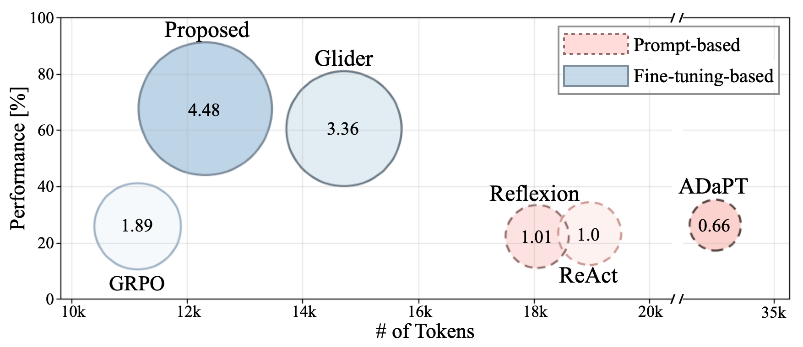
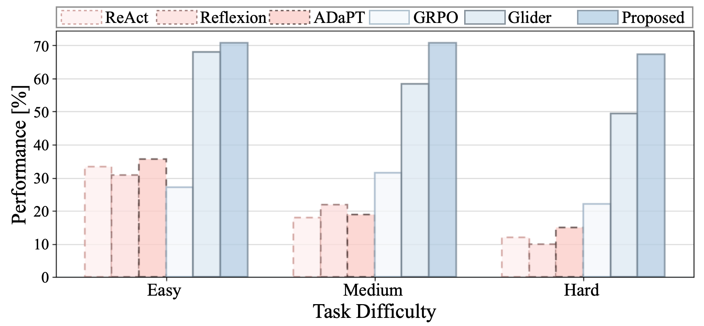
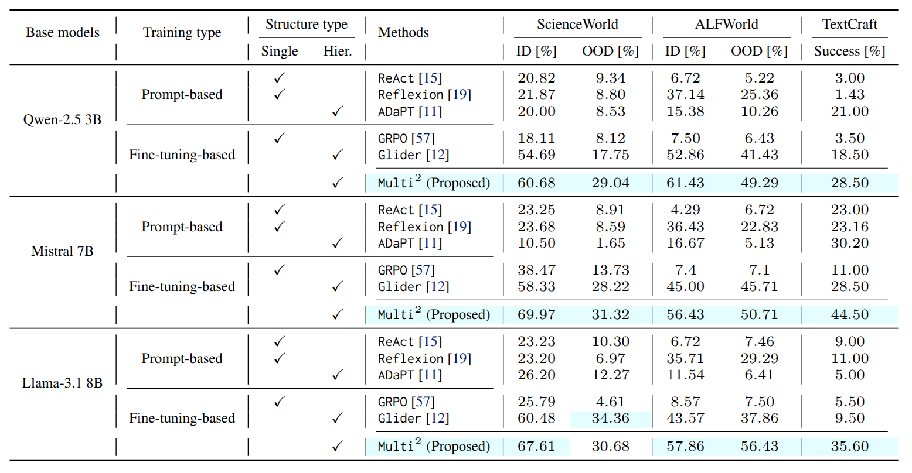

Multi2 : Hierarchical Multi-Agent Decision-Making with LLM-Based Agents in Interactive Environments
Project page for Multi2. Use the buttons below to access the Paper / Dataset / Code.

Abstract
A central goal of large language model (LLM) research is to build agentic systems that can plan, act, and adapt through sustained interaction with dynamic environments.
While recent LLM-based agents exhibit impressive contextual reasoning, their long-horizon decision-making remains fragile, often suffering from objective drift, where goals and plans degrade over extended interactions.
We introduce Multi2, a hierarchical multi-agent decision-making framework that explicitly decomposes agent behavior into complementary roles.
A high-level agent (System 1) focuses on context-aware sub-goal generation using supervised fine-tuning (SFT), while a low-level agent (System 2) executes atomic actions through offline-to-online reinforcement learning (RL) in interactive environments.
This separation enables stable long-horizon control, mitigates objective drift, and allows efficient adaptation.
Across diverse interactive environments, Multi2 consistently outperforms strong agentic baselines, demonstrating improved robustness and coordination in multi-turn interaction.
Beyond performance, we introduce and release three hierarchical benchmark datasets, filling a long-standing gap in training and evaluating hierarchical decision-making for LLM-based agents.
Framework
Key Points
Hierarchical Roles
Hierarchical multi-agent framework: decouple System 1 sub-goal planning from System 2 action execution; context-aware sub-goals → atomic actions.
Role-Aligned Learning
Role-aligned training with role specialization: System 1 supervised fine-tuning (SFT) for context-aware sub-goal planning; System 2 offline-to-online reinforcement learning (RL).
Mitigate Objective Drift
Mitigate objective drift in long-horizon, multi-turn interaction by anchoring execution to explicit sub-goals and improving goal-consistent execution.
Offline → Online RL
Offline-to-online RL pipeline: initialize from offline data, then online interaction for continual self-improvement; KL-regularized online refinement stabilizes policy shifts.
Token Efficiency
Token efficiency via selective invocation: use System 1 only when needed for sub-goal planning; keep System 2 lightweight for token-efficient interaction.
Hierarchical Datasets
Role-specific hierarchical datasets: prompt-formatted observation–sub-goal pairs for System 1 and sub-goal-conditioned transitions for System 2; standardized prompt templates for reproducibility.
Benchmarks
Click a benchmark to visit its official page / repository.
ScienceWorld
Text-based scientific experimentation in a simulated lab: hypothesis-driven exploration, measurement, and multi-step procedures
ALFWorld
Embodied household tasks grounded in ALFRED: language-to-action navigation, object interaction, and compositional goal execution
TextCraft
Crafting and survival-style planning in text: gather–transform–build loops with tool use, dependencies, and resource constraints
Results
Case study: Multi² maintains goal-consistent behavior over long-horizon interaction and improves robustness compared to strong agentic baselines.
Token Efficiency. Multi² achieves stronger performance per token usage, reducing inference cost while maintaining goal-consistent behavior.

Horizon Robustness. Multi² remains robust as task horizons grow, sustaining high success rates over longer interaction sequences compared to strong baselines.

Performance. Multi² achieves the strongest performance across most backbones and splits, suggesting that its gains generalize beyond a particular model setting.

How to Run
Below are the setup and training commands from our installation README. If anything differs from your environment, treat these as reference commands and follow the repository README for the most up-to-date instructions.
Setup (Linux prerequisites + Anaconda)
Install prerequisites (before installing Anaconda)
sudo apt-get update
sudo apt-get upgrade
sudo apt-get install libgl1-mesa-glx libegl1-mesa libxrandr2 libxss1 libxcursor1 libxcomposite1 libasound2 libxi6 libxtst6Install Anaconda
Download Anaconda installer (Linux version), and run:
sudo apt-get install python3 python python3-pip python-pip git
bash ~/Downloads/Anaconda3-2020.07-Linux-x86_64.shEnvironment Setup
Benchmark dependencies
Follow the official instructions to install each benchmark environment: ScienceWorld, ALFWorld, and TextCraft.
Clone this repository
git clone https://github.com/anonymous-projectpage/Multi-Square.git
cd Multi-2-LLM-AgentCreate and activate benchmark-specific environments
We use separate conda environments for training/ScienceWorld evaluation vs. ALFWorld evaluation vs. TextCraft evaluation.
Training + ScienceWorld evaluation
conda create -n Multi_Train_ScienceWorld python=3.10 -y
conda activate Multi_Train_ScienceWorld
pip install -r requirements_train+scienceworld.txtALFWorld evaluation
conda create -n Multi_ALFWorld python=3.10 -y
conda activate Multi_ALFWorld
pip install -r requirements_alfworld.txtTextCraft evaluation
conda create -n Multi_TextCraft python=3.10 -y
conda activate Multi_TextCraft
pip install -r requirements_textcraft.txtModel Training
1.1 Supervised Fine-Tuning for System 1
Set the configuration and base model in ./config/multi_bc.json.
benchmark can be one of: "scienceworld", "alfworld", "textcraft".
{
"benchmark": "scienceworld",
"model_name": "/path/to/your/backbone"
}
Set the checkpoint path in ./alg/multi_SFT_sys1.py:
base_ckpt = "/path/to/your/checkpoint"
Choose learning rate candidates in ./train_multi_bc.py:
lr_grid = [candidate1, candidate2, ...]Run:
python train_multi_bc.py1.2 Structure Formatting for System 2
Set the configuration and base model in ./config/multi_rl_sft.json:
{
"benchmark": "scienceworld",
"model_name": "/path/to/your/backbone"
}
Set the load path in ./alg/multi_warmup_sys2.py:
base_ckpt = "/path/to/your/checkpoint"Run:
python train_multi_rl_warmup.py1.3 Offline Reinforcement Learning for System 2
Set the configuration and base model in ./config/multi_rl.json:
{
"benchmark": "scienceworld",
"model_name": "/path/to/your/backbone"
}
Depending on the benchmark, change the import in ./train_multi_rl.py:
# ScienceWorld
from alg.multi_rl_sys2_scienceworld import Multi2
# ALFWorld
from alg.multi_rl_sys2_alfworld import Multi2
# TextCraft
from alg.multi_rl_sys2_textcraft import Multi2
Set the trained policy roots in the corresponding algorithm file under ./alg/
(manually specify paths to the trained System 1 model and the System 2 structure-formatting model). Example:
# e.g., ./alg/multi_rl_sys2_*.py
# Path to the trained System 1 (SFT) checkpoint
high_path = "/path/to/your/system1_sft_checkpoint"
# Path to the trained System 2 warmup checkpoint
low_path = "/path/to/your/system2_warmup_checkpoint"Run:
python train_multi_rl.pyEvaluation
Use the same ./config/eval_multi_rl.json for evaluation, and set the model checkpoint paths in the corresponding evaluator.
ScienceWorld
1) Activate the Multi_Train_ScienceWorld environment.
2) Set high_path and low_path in ./alg/eval_multi_sci.py to your trained checkpoints.
3) Run:
python eval_multi_scienceworld.pyALFWorld
1) Activate the Multi_ALFWorld environment.
2) Set high_path and low_path in ./alg/eval_multi_alf.py.
3) Run:
python eval_multi_alfworld.pyTextCraft
1) Activate the Multi_TextCraft environment.
2) Set high_path and low_path in ./alg/eval_multi_textcraft.py.
3) Run:
python eval_multi_textcraft.py
Tip: you can link directly to this section using #how-to-run.